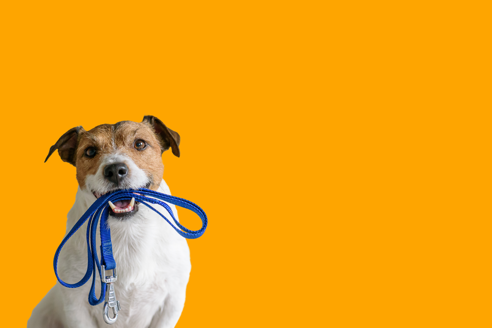

<ion-header>
  <ion-toolbar> 

    <ion-title style="width: 100%; position: absolute; left: 0; color: var(--ion-color-primary);">
      Walkies
  </ion-title>
  </ion-toolbar>
</ion-header>
<ion-content>

  <!--CALL TO ACTION DIV-->
    <div id="call-to-action-div">
      <h2 class="welcome-msg">Welcome Back , Billy</h2>
      <ion-button class="action-btn" color="light">
       <label>I need to walk someone</label>
      </ion-button>
    </div>
    

    <!--MORE ABOUT WALKIES-->


</ion-content>


<!--DOG OWNER TABS-->
<ion-tabs>  
  <ion-fab vertical="bottom" horizontal="center" translucent="true"  [routerLink]="['/','find-walks']">
    <ion-fab-button (click)="goToPictures()">
      
    </ion-fab-button>
  </ion-fab> 
  <ion-tab-bar slot="bottom" class="ion-no-border">
    <ion-tab-button tab="tab-encounters" class="home">
      <ion-icon name="home" ></ion-icon>
    </ion-tab-button>
    <ion-tab-button tab="tab-conversations" class="comments" [routerLink]="['/','owner-pets']">
      
      <ion-badge></ion-badge>
    </ion-tab-button>
    <svg height="50" viewBox="0 0 100 50" width="100" xmlns="http://www.w3.org/2000/svg"><path d="M100 0v50H0V0c.543 27.153 22.72 49 50 49S99.457 27.153 99.99 0h.01z" fill="red" fill-rule="evenodd"></path></svg>
    <ion-tab-button tab="tab-notifications" class="notifs">
      <ion-icon name="notifications"></ion-icon>
      <ion-badge>1</ion-badge>
    </ion-tab-button>

    <ion-tab-button tab="tab-profile">
      <ion-icon name="person"></ion-icon>
    </ion-tab-button>
  </ion-tab-bar>
</ion-tabs>